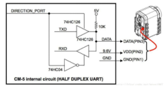
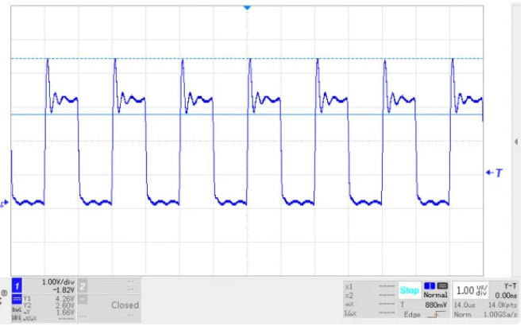
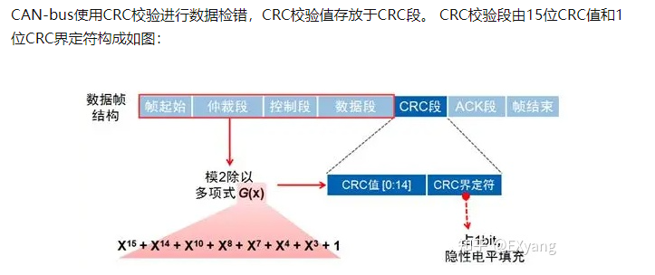

Artinx电控代码框架——超详细解析（向马哥致敬salute）
Artinx电控代码框架——超详细解析（向马哥致敬salute）一.底层更新逻辑——RobotEngine和Entity1.RobotEngine综述何处使用（哪里有模板）如何使用（怎么自己写）源码分析2.Entity综述何处使用(哪里有模板) + 如何使用（怎么自己写）源码分析3.整体更新逻辑Systick中断流程回顾二.通讯简介1.通讯的简介2.通讯的分类串行和并行全双工，半双工和单工异步通信和同步通信1.异步通讯2.同步通讯3.通讯的物理层三.Can消息收发——CanManager，CanMsgDispatcher和CanMsgHandler1.什么是can1.差分信号2.终端电阻3.硬件结构（硬件要听听）4.Can通讯详解CAN通信讲解 - 知乎 (zhihu.com)4.1帧起始与振结束4.2仲裁段和仲裁机制4.3控制段4.4数据段4.5CRC段4.6ACK段4.7科普位填充4.8CAN采样点与波特率5.怎么在代码上配置can通讯第一步：初始化GPIO第二步：配置CAN中断第三步的先验知识can的收发邮箱(33条消息) STM32之CAN---发送管理分析_bonson2004的博客-CSDN博客第三步配置滤波器第四步配置时序和位时间和一些基本设置2.我们的CAN通讯1.先行知识1.1循环队列
一.底层更新逻辑——RobotEngine和Entity
1.RobotEngine
综述
RobotEngine是整个机器人的逻辑处理中心，所有的控制器，执行器和传感器都是这个类的成员变量，主要掌管所有成员变量的更新逻辑。
何处使用（哪里有模板）
就像我们之前说的一样，这个变量是主管整个机器人的，他是代码里为数不多实例化在main函数的变量之一。
class Testbot : public RobotEngine{private: ChassisController chassisController; Rotate rotate; ShiftRegisterController shiftRegisterController; Leveler leveler;public: Testbot() : RobotEngine(this) { }};///摘自工程车底盘文件夹里的Testbot.hpp这里的Testbot想必老队员都不会很陌生，给新队员介绍一下这个Testbot是对整个机器人进行测试的时候的通用名称。如果定稿了就会取像Sentry（哨兵）和Engineer（工程）这样的名字。
xxxxxxxxxxclass Sentry : public RobotEngine{private: ChassisController chassisController; GimbalController upGimbalController; GimbalController downGimbalController;public: Sentry() : RobotEngine(this), upGimbalController(GimbalController(EntityClassType::ECT_UpGimbalController)), downGimbalController(GimbalController(EntityClassType::ECT_DownGimbalController)) {}};///摘自哨兵底盘文件夹里的Sentry.hpp在SysTick_Handler()函数（这个函数在之后说明，具体可以理解为这个函数固定1ms调用一次）里会调用testbot.tick()，这个函数执行了所有控制器，传感器等的更新。这就表示了理论上所有控制器，传感器，执行器都会在每个1ms执行一次更新。
xxxxxxxxxxvoid SysTick_Handler(void){ // ... testbot.Tick(); // ... }///摘自哨兵底盘文件夹里的Projects/RmBoardA/main.cpp如何使用（怎么自己写）
1.新建一个类，如果你没有其他的针对于当前兵种的函数需求，则直接新建xxx.hpp文件，在这个文件里新建一个类继承自RobotEngine
xxxxxxxxxxclass Testbot : public RobotEngine{ // ...}2.导入你所想要实现的控制器，并实例化在它的private子变量里（下图的Testbot就实现了ChassisControllrt底盘控制，Rotate夹爪旋转控制等）。至于为什么没有传感器和执行器，是因为这些对象已近作为控制器的成员变量随控制器嵌入到了系统里。
xxxxxxxxxxclass Testbot : public RobotEngine{private: ChassisController chassisController; Rotate rotate; ShiftRegisterController shiftRegisterController; Leveler leveler; // ...} 3.实现它的构造函数，后面的: RobotEngine(this)的作用是表示后面是初始化列表、对父类进行初始化。
调用格式为“子类构造函数 : 父类构造函数”。
xxxxxxxxxxpublic: Testbot() : RobotEngine(this) { }};4.第一次提醒，下面的处理是为了防止在一个文件中重复包含一个头文件
xxxxxxxxxx// 如果没定义TESTBOT_HPP，下面的语句才会编译// 那么就定义TESTBOT_HPP并编译下面的语句//预处理if结束// ...源码分析
xclass RobotEngine{private: Entity* m_EntityList[ET_LENGTH][MAX_ENTITIES]; uint8_t m_EntityCount[ET_LENGTH];
bool m_IsRunning; static bool IsInstantiated; static RobotEngine* instance;public: //... RobotEngine类在private成员变量区维护了一个Entity指针类型的二维数组（这里的Entity会在之后解释，这里理解为所有的控制器，传感器，执行器都继承自Entiity）那么m_EntityList变量就按各个类型的数目和控制器，传感器，执行器三个类型存储了机器人的所有部分。
m_EntityCount的存在主要是为了之后遍历m_EntityList更加方便。
m_IsRunning是为了防止没有初始化的脏标记（后续解释）。
至于IsInstantiated和instance牵扯到单例模式。
单例的字面意思就是只有一个实例。单例模式是一种编程方法(25条消息) 类的static成员咋用？和普通成员变量之间怎么访问？凡事要上心的博客-CSDN博客静态成员访问（大家可以看看这个博客讲的还比较清楚）。我们这里的使用其实是一种变种，其原理其实很简单，就是使用static关键字包装这个对象的指针，我们这里首先回顾一下static关键字的特性。
对于static成员变量（也是这里所使用的情况）
1.类的所有实体对象共享这个变量
2.类的数据成员在类外定义时不加 static
xxxxxxxxxxclass Test {public: double d; static int n;};
int Test::n; // 静态成员变量需要在类外声明(分配空间，可以显式初始化，默认初始化为0)
cout << sizeof(Test) << endl;cout << Test::n << endl;静态成员变量存储在全局/静态区，在整个程序结束的时候才会被释放，静态成员变量只有在类外声明时才分配空间，可显式初始化，不显式初始化OS默认初始化为0。
静态成员变量属于类不属于对象而是属于整个类，所以sizeof()的结果不包括静态成员变量大小。也是因为同样的原因，它可通过对象调用，也可以通过类名作用域调用(非静态成员变量只能通过对象调用)。
这两个static变量的作用具体体现在RobotEngine类的构造函数上。我们可以理解现在这两个变量不属于某个对象，而是属于整个类。
xxxxxxxxxxRobotEngine::RobotEngine(RobotEngine* _instance, uint32_t _msPerTick) : m_EntityList{nullptr}, m_EntityCount{0}, m_IsRunning{false}{ // ...}这里面的_msPerTick暂时不用管，是个废案，剩下的参数指针其实是其子类的指针（科普：对于子类指针强转为父类指针，强转后的指针在调用虚函数时失效，会调用子类的同名函数。若不是虚函数，则调用时会调用父类函数）。我们在构造RobotEngine对象的时候一般采用构造一个它的子类的方式（把复杂的属性留在内部，外部只留子类的成员变量，方便也美观）
xxxxxxxxxxclass Sentry : public RobotEngine{private: // ...public: Sentry() : RobotEngine(this), // ... {}};使用的时候在main函数文件外面声明一个全局变量(其实在哪个C++文件都可以，反正是全局变量是共同的，放在main只是为了好找)
xxxxxxxxxxSentry sentry;具体里面主要实现了实例化判断，一开始两个静态变量被初始化为false和nullptr
xxxxxxxxxxbool RobotEngine::IsInstantiated = false;RobotEngine* RobotEngine::instance = nullptr;如果没有被实例化，则将传入的子类实例化的指针赋给静态指针，并把实例化脏标置为true，下次如果失误再次调用构造函数则不会覆盖第一次的静态指针。我们每次通过静态指针调用的对象始终都是第一次实例化的对象（这就是单例模式，这里的单例模式的使用其实很奇怪，我们仍可以定义实例化很过个RobotEngine对象，只是不会被使用，这其实不是我们的初心，之后的另一种单例方式则会更加优雅）
xxxxxxxxxxRobotEngine::RobotEngine(RobotEngine* _instance, uint32_t _msPerTick) : m_EntityList{nullptr}, m_EntityCount{0}, m_IsRunning{false}{ if(!IsInstantiated) { instance =_instance; }
IsInstantiated = true;}我们接下来继续认识其他成员函数：
xxxxxxxxxxstatic RobotEngine* Instance(){ return instance; }承接上面的内容，静态成员变量可以由类名作用域调用，静态成员函数自然也可以，我们通常使用这个函数来访问我们的单例，使用例子如下：
xxxxxxxxxxRobotEngine::Instance()剩下的函数则是跟Entity的更新有关
xxxxxxxxxxvoid RobotEngine::AddEntity(Entity* _newEntity, EntityType _type){ if(m_IsRunning) { return; }首先是m_IsRunning脏标的判断，这个脏标主要是对是否调用初始化函数Init（）
xxxxxxxxxxvoid RobotEngine::Init(){ for(int _type = ET_SENSOR; _type < ET_LENGTH; ++_type) { for(int i = 0; i < m_EntityCount[_type]; ++i) { m_EntityList[_type][i]->Init(); m_EntityList[_type][i]->SetActive(true); } }
m_IsRunning = true;}这个初始化函数主要是实现了对每个Entity的Init（）（其实Init（）是空函数，估计是留的接口），并调用SetActive把每个Entity的私有变量IsActive脏标设为True（其实按理来说，没有Init()就调用AddEntity（）就现在的框架来讲不会有很严重的结果）
xxxxxxxxxx////承接上面 if(m_EntityCount[_type] >= MAX_ENTITIES) { _newEntity->SetId(0xFF); return; }判断加入的Entity是否超过上限，如果Entity过多会导致一个tick（）函数里需要处理的内容过多，导致处理时间过长，而时钟系统决定每1ms会调用一个tick（）函数，可能会导致时序紊乱的问题。这里的MAX_ENTITIES是32，不知道是不是通过测试得到的。
xxxxxxxxxx////承接上面 uint8_t _id = m_EntityCount[_type]; _newEntity->SetId(_id); m_EntityList[_type][_id] = _newEntity;
++m_EntityCount[_type];}接下来就是更新m_EntityList数组，将对应类别的Entity总数m_EntityCount[_type]加一，然后给Entity赋值_Id(其实就是加入列表的顺序)。
有Add算法自然有Search算法
xxxxxxxxxxEntity* RobotEngine::GetEntity(EntityClassType _classType){ for(int _type = ET_SENSOR; _type < ET_LENGTH; ++_type)////这里的ET_LENGTH为3，具体实现方式为enum的数字表示，极其优雅，对于该列表，enum EntityType{ET_SENSOR = 0, ET_CONTROLLER, ET_ACTUATOR, ET_LENGTH};ET_LENGTH刚好为3即enum的长度，ET_SENSOR = 0。 { for(int i = 0; i < m_EntityCount[_type]; ++i)////过于（bushi）谨慎的判断，很有马哥的风格 { if(m_EntityList[_type][i]->GetClassType() == _classType)////过于（bushi）谨慎的判断，很有马哥的风格 { return m_EntityList[_type][i]; } } } return nullptr;}双重遍历二维数组，找到第一个符合的Entity，否则就返回空。（这个函数的实现，我不好评价毫无意义）。
最后一个函数极其重要Tick（）
xxxxxxxxxxvoid RobotEngine::Tick(){ for(int _type = ET_SENSOR; _type < ET_LENGTH; ++_type) { for(int i = 0; i < m_EntityCount[_type]; ++i) { Entity* _entity = m_EntityList[_type][i]; if(!_entity->IsActive()) { continue; }
_entity->Entity::Update();
if(_entity->NeedUpdate()) { _entity->Update(); _entity->ClearUpdateFlag(); } } }}大概就是把m_EntityCount二维数组里所有的Entity都更新（调用Update（）函数）（至于更新准则，在Entity类里面赘述）。重要点：这个函数每个1ms被调用一次，至于为什么在最后的综述讲。
2.Entity
综述
Entity类是所有传感器，控制器，执行器的父类。而这三个类则是像Motor，ChassisController这种类的父类之一。为所有延伸的类提供函数接口Update（）
何处使用(哪里有模板) + 如何使用（怎么自己写）
就像我们在上面说的Entity是所有类的主类，它有三种变种分别是传感器，控制器和执行器
xxxxxxxxxxclass SensorEntity : public Entity{ //...}class ControllerEntity : public Entity{public: ControllerEntity(EntityClassType _classType); virtual void Init(){}};
class ActuatorEntity : public Entity{public: ActuatorEntity(EntityClassType _classType); virtual void Init(){}};对应到我们写的的类，则是要记住依照其类别继承对应的父类，在写构造函数的时候对应调用其父类的构造函数
xxxxxxxxxxclass Motor : public ActuatorEntity{public: Motor(EntityClassType _classType): ActuatorEntity(_classType), controlMode{RELAX_MODE}, pFeedback{nullptr} {}并重载其留下的两个虚函数接口Init()和Update()，其实也可以不用重载，看需求。因为它不是纯虚函数(25条消息) C++ 虚函数、纯虚函数、重载、重写的区别Bird鸟人的博客-CSDN博客虚函数重载和重写所以不需要强制重载。
xxxxxxxxxx//摘自G6020.cppvoid G6020::Update(){ //...}////这个类就没有重载Init()
//摘自M3508SensorHandler.cpvoid M3508SensorHandler::Init(){ SetCanTimeout(true);}void M3508SensorHandler::Update(){ //...}////这个类就重载了Init()
像这样的写法，就是纯虚函数，子类必须重载这个函数。
xxxxxxxxxxclass Motor : public ActuatorEntity{public: //... virtual void Update() = 0;};源码分析
xxxxxxxxxxclass Entity{private: RobotEngine* m_pOwner; //...这个成员变量主要只为了记录对应Entity被加载到了哪个RobotEngine里，会在构造函数的时候被赋值。
xxxxxxxxxx uint8_t m_EntityId;////依据加载顺序赋的Id(上面有讲) uint32_t m_LastUpdateTick;////跟Entity更新Update()函数有关的防止超时的变量 uint32_t m_TicksToUpdate; uint32_t m_DefaultTicksToUpdate; EntityClassType m_ClassType; bool m_IsActive;////跟更新有关的两个脏标 bool m_NeedUpdate;函数回顾Tick（）：
xxxxxxxxxx双重for循环： Entity* _entity = m_EntityList[_type][i]; if(!_entity->IsActive()) { continue; }这个判断可以大致理解为：如果当前遍历到的Entity没有被Active，则跳过它。IsActive()函数返回的是Entity的私有变量bool m_IsActive；，这个变量在RobotEngine的Init（）函数里的全被初始化为True，考虑到m_IsActive是Entity的私有变量，能操作它的只有Entity的函数：
xxxxxxxxxx void SetActive(bool _state){ m_IsActive = _state; }但整个代码框架的各种版本都没有调用这个函数，所以其实不用过多考虑。
xxxxxxxxxx////承接上面的Tick（）函数 _entity->Entity::Update();回顾一下上面的虚函数性质：这里的_entity是强转成父类的子类指针，如果不加处理直接调用由于virtual关键字调用的其实是子类的Update()，但这里由于Entity：：作用域的使用则是父类的Update()函数。
xxxxxxxxxxvoid Entity::Update(){ if(!m_IsActive) { return;////如果该Entity没有被激活自然不需要进入更新判断函数 }
if(m_NeedUpdate) { return;////如果已近确定要NeedUpdate自然不需要进入更新判断函数 }
if(m_TicksToUpdate > 0) { --m_TicksToUpdate; m_LastUpdateTick = m_pOwner->GetTick();////每个Tick()/每过1ms， ////m_TicksToUpdate减一 }
if(0 == m_TicksToUpdate)////当更新缓冲时间m_TicksToUpdate等于0，确认NeedUpdate脏标置True { m_NeedUpdate = true; }}这个函数主要是为了判断该Entity是否需要更新，每个Entity都有一个属性叫做m_TicksToUpdate，这个变量主要是表示：还有多久时间后才会更新该Entity。所有的Entity的更新都需要进行脏标判断,如下述代码：
xxxxxxxxxx if(_entity->NeedUpdate()) { _entity->Update();////这里调用的才是子类自己实现的Update()函数 _entity->ClearUpdateFlag(); }上述代码函数ClearUpdateFlag();除了实现了脏标恢复（把m_NeedUpdate置为false）还实现了缓冲时间m_TicksToUpdate重置，这个值一般是1ms，就是说明，2ms才更新一次Entity，特殊情况会延长这个时间（一般是因为处理数据太多，太频繁更新会堵塞，哨兵里面就是这样的）。
xxxxxxxxxxvoid Entity::Suspend(uint32_t _ticks){ m_TicksToUpdate = _ticks; m_NeedUpdate = false;}与m_TicksToUpdate配套的还有Suspend（翻译：悬挂）函数，该函数主要是更改缓冲时间m_TicksToUpdate，实现将某一个Entity挂在一边不处理一段时间。
对于Entity的三个变种，执行器和控制器没有什么特殊的地方，传感器会有一些特殊属性。
xxxxxxxxxxSensorEntity::SensorEntity(EntityClassType _classType) : Entity(ET_SENSOR, _classType, RobotEngine::Instance()), m_CanTimeout(false), m_LastUpdateTick(0), m_TimeoutTick(100){}这些变量会对是否更新传感器起到重要作用：
xxxxxxxxxx////承接上面的Tick（）函数if(_entity->GetEntityType() == ET_SENSOR)////判断Entity是不是Sensor { SensorEntity& _sensor = *(SensorEntity*)(_entity);////和其他直接用指针不同，这里使用引用。原因是：我们在之前把所有子类指针强转成了父类指针，导致这个被强制转化的指针不能访问专属于子类SensorEntity的一些特殊属性。这里就有同学会问：为什么我们不直接强转回去呢？那就破坏了我们m_EntityList里面的东西，这是我们不想看到的。同时我们也不想再次创造一个新变量或者新指针（毕竟谁会知道会发生什么），那我们就使用引用就完美解决了这些问题。 if(_sensor.CanTimeout()) { if(_sensor.HasNewData()) { _sensor.ClearUpdateFlag(); } } }我们接着来看这个函数：首先是第一个函数CanTimeout()：
xxxxxxxxxx bool CanTimeout() const { return m_CanTimeout; }继续溯源，操作这个Entity的私有变量的只有函数SetCanTimeout():（小技巧：想看一个变量在哪里被使用了，除了crtl+F搜索这个变量还要搜索能操作它的set函数）
xxxxxxxxxx void SetCanTimeout(bool _canTimeout) { m_CanTimeout = _canTimeout; }那么哪里调用了SetCanTimeout()捏？
xxxxxxxxxxvoid G6020SensorHandler::Init(){ SetCanTimeout(true);}void M2006SensorHandler::Init(){ SetCanTimeout(true);}void M3508SensorHandler::Init(){ SetCanTimeout(true);}只有这三个使用can通讯的电机对应的传感器调用了这个函数将m_CanTimeout置为True，并且之后再没有调过函数将这个值改回False，那么我们就可以理解为这个判断里面的操作是针对于这三类can协议传感器的特殊操作：（就是判断这个ET_SENSOR是否会出现can信息等待超时的问题，换句话来说就是受到新的can消息就需要马上处理，不需要进行之前所说的m_TicksToUpdate缓冲时间的等待）。
xxxxxxxxxxif(_sensor.HasNewData()){ _sensor.ClearUpdateFlag();}好的接下来我们去找HasNewData()
xxxxxxxxxx virtual bool HasNewData() { bool _dataReadyShadow = newDataReady; newDataReady = false; return _dataReadyShadow; }我们可以知道这个函数返回的是newDataReady的bool值。我们再去找newDataReady
xxxxxxxxxx virtual void HandleNewCanRxMsg(CanRxMsg* _msg) { CanMsgHandler::HandleNewCanRxMsg(_msg); newDataReady = true; ClearUpdateFlag(); }可喜可贺，我们到头了，当传感器接受到了新的信息，就回把newDataReady置为True。
于是这整个函数我们可以理解为：如果这类需要特殊处理can信号的传感器收到了新的can消息马上执行ClearUpdateFlag()。
xxxxxxxxxxvoid ClearUpdateFlag() { m_LastUpdateTick = Time::GetTick(); }坏了跟我们想的不一样，并没有做处理（其实我也不知道为什么不做提前更新处理，我觉得可以做的其实），这里留个念想吧，能做提前更新处理的有两种方式（不清楚的回顾一下前面的void Entity::Update()）要么直接m_NeedUpdate = true;要么m_TicksToUpdate = 0。但这个处理不是完全没有作用。
SensorEntity其实还有一个特殊函数IsTimeout()
xxxxxxxxxxbool SensorEntity::IsTimeout(){ if(!m_CanTimeout) { return true; }
return Time::GetTick() > m_LastUpdateTick + m_TimeoutTick;}这个函数因为也有if(!m_CanTimeout)同样是针对于那些会出现can信息等待超时的问题的SensorEntity，如果不是这类Sensor那么直接返回True。他返回的是判断是否距离上次更新时间超过了m_TimeoutTick（100ms）。（小提示：Time::GetTick()返回的是挂墙时钟，就是从上电开始过了多长时间）。那么这个IsTimeout()有什么用呢？
xxxxxxxxxx if(!m_ChassisWheel[CWT_RightFront].sensorFeedBack.IsTimeout()) { Led::On(Led::DebugA0); } else { Led::Off(Led::DebugA0); }////摘自ChassisController.cpp这个函数的意思是，在ChassisController的更新过程中会判断对应轮子的传感器有没有出现can消息超时的问题，如果这类Sensor一直受到新的消息m_LastUpdateTick会一直更新，那么Time::GetTick()就不可能大于m_LastUpdateTick + m_TimeoutTick。IsTimeout()返回为False，Led就会亮。这里其实是一个状态指示灯，如果电调（传感器）不出问题，那么对应的四盏灯全会亮，如果出了问题（can消息很长时间没有更新），那么对应的灯就会熄灭。（至于为什么出问题灭灯不是亮灯，我怀疑是因为A板上面的灯是绿色的缘故）
3.整体更新逻辑
Systick中断
这里我们需要科普一个很重要的东西SysTick中断。看过我们之前B站视频【2023招新培训】嵌入式编程漫漫漫慢慢慢谈哔哩哔哩bilibili的同学应该知道开发版的CPU的工作模式只有两种：1.线程模式（main函数里面的内容）2.中断模式。
这里我不过多赘述，具体可以去17:12开始看。总结成一句话：线程模式（main函数）里的内容不重要,最终都会进入死循环。
xxxxxxxxxxint main(void){ //.... //.... while (1) { }}重要的是中断，而其中最重要的一个中断是SysTick中断：（这里有些人听的时候可能讲错了）：
SysTick 定时器是自减定时器（讲的时候讲成递增了，但原理是一样的），我们在初始化调用。
xxxxxxxxxx void SysTick_Init(uint32_t tick_ms) { SysTick_CLKSourceConfig(SysTick_CLKSource_HCLK_Div8);
uint32_t reload = SystemCoreClock / 8000 * tick_ms;
SysTick->CTRL |= SysTick_CTRL_TICKINT_Msk; // Enable SysTick Interrupt SysTick->LOAD = reload; SysTick->CTRL |= SysTick_CTRL_ENABLE_Msk; // Enable SysTick }SysTick->CTRL, 控制和状态寄存器, 位[0]是使能位; 位[1]TICKINT 计数将为0时是否触发SysTick Handler;
SysTick->LOAD, 重装载寄存器， 作用是当计数减为0时，将特定的初始值装载到当前值寄存器中。
SysTick->VAL, 当前值寄存器， 当前计数值，每一次系统中断就减小1。（我们可以拿到这个定时器内部的值）
SysTick_CLKSourceConfig(SysTick_CLKSource_HCLK_Div8);这个函数表示Systick系统滴答计时器使用的递减频率是内核频率的八分之一。
那么就会在每1ms执行一次Systick_hadler。
xxxxxxxxxxvoid SysTick_Handler(void){ // Disable all interrupt __set_PRIMASK(1); //.... testbot.Tick(); //.... // Enable all interrupt __set_PRIMASK(0);}Systick_hadler里面的函数其他暂时不用管，具体只有这三句，先禁止外部终端，优先处理内部终端和一些重要的函数，再允许外部中断，其中最重要的就是testbot.Tick();，这个就是我们之前一直在讲的RobotEngine::Tick()函数。也就可以理解每1ms调用一个RobotEngine::Tick()函数，更可以理解为所有Entity的最快Update是1ms。
流程回顾
我们再次回顾整个流程：
一个RobotEngine的子类中的Entity类成员会在RobotEngine::Tick()被调用的时候执行其虚函数Update()，假如该Entity类有其他Entity类成员，该Entity类成员的虚函数Update()也会被执行。同理，RobotEngine::Init()被调用的时候，所有注册了的Entity类的Init()函数也会被调用，示例见下列伪代码：
xxxxxxxxxxclass M3508Sensor : public SensorEntity{ // ... virtual Init(); virtual Update(); // ...};
class M3508 : public ActuatorEntity{ // ... M3508Sensor m_Sensor; // ... virtual Update(); // ...};
class ChassisController : public ControllerEntity{ M3508 m_Motors[4]; // ... virtual Init(); virtual Update(); // ...};
class TestBot : public RobotEngine{ // ... ChassisController m_ChassisController; // ...};
TestBot testbot;
void SysTick_Handler(void){ // ... testbot.Tick(); // ...}
int main(){ // ... testbot.Init(); // ...}
继承树如下图所示：
每次在SysTick中断中，testbot.Tick();被调用的时候，会执行4个M3508Sensor的Update()函数，更新电机传感器的反馈；ChassisController的Update()函数，根据控制逻辑控制4个电机的速度或是位置；以及4个M3508的Update()函数，计算出电机具体的控制电流并且发送出去。（其实不严谨，看了上面的文章就会知道会有个缓冲时间。）
Entity类的SetDefaultTicksToUpdate(uint32_t _defaultTicks)成员函数可以将该Entity类的Update之间的时间设置为defaultTicks个tick(一个tick默认1毫秒)；Suspend(uint32_t _ticks)成员函数可以让该Entity类暂停更新ticks个tick。
RobotEngine类的GetEntity()成员函数可以获取某个类型的Entity的指针。
核心代码在RobotEngine.hpp, RobotEngine.cpp, Entity.cpp以及EntityType.hpp里。最核心的成员函数是RobotEngine::Tick()，会遍历所有记录下来的Entity，检查是否应该在当前执行其Update()成员函数。
Tick()应该每个Systick都调用一次。
有三种类型的Entity，分别是SensorEntity，ControllerEntity和ActuatorEntity，每次调用Tick()时，只有在所有SensorEntity都遍历了之后才会开始遍历ControllerEntity，同样，遍历完所有ControllerEntity才会遍历ActuatorEntity。相同类型的Entity之间执行顺序不确定。
把Entity注册到RobotEngine的过程有点hack，考虑以下伪代码：
xxxxxxxxxxclass A{public: A(){ cout << "A" << endl; }};
class B{public: A a; B(){ cout << "B" << endl; }};
class C{public: C(){ cout << "C" << endl; }};
class D : public C{public: B b; D(){ cout << "D" << endl; }};
int main(){ D d;}运行结果应该为：
xxxxxxxxxxCABD
个人经验，这个问题几乎是所有互联网大厂C++面试笔试必考题，我在参加字节跳动、腾讯、米哈游、西山居、育碧面试的时候，都被问到过这个问题。
这套代码框架中，A为某个Entity类，B为另一个Entity类，C为RobotEngine类，D为RobotEngine的衍生类(例如TestBot类)，具体注册过程可以通过看Entity类与RobotEngine类的构造函数搞明白。
二.通讯简介
这一章主要是为了之后的通讯章节打下基础
1.通讯的简介
计算机网络基础（二）：网络数据通信基础 - 腾讯云开发者社区-腾讯云 (tencent.com)（好博客）
计算机与外界的数据交换称为通信，针对于我们打比赛所需要的通讯主要分为三类：单片机与单片机之间的通讯，单片机与PC端的通讯，单片机与外设（包括电机电调类的输出类型和遥控器类的输入类型）之间的通讯。
我们接着关注于协议这个词（针对于我们的比赛，协议可以理解不同之间硬件信号传输的规则），为了达成双方的通讯这里就设计到了两个问题，怎么传输和怎么理解信息）
2.通讯的分类
串行和并行
常见的信号传输可以分为两种：串行通讯和并行通讯
串行通信指各个数据按传送位顺序进行传输，最少只需要两个传输线即可完成，就是我们通常讲的RT（receive）和TX（Transmit）（这句话其实不是很完善，其实一条线就足够，后面会补充）。
 简单点理解就是数据的出口只有一条，这些数据按照一定的顺序一位一位的向外输出。
简单点理解就是数据的出口只有一条，这些数据按照一定的顺序一位一位的向外输出。
并行通信：并行通信指各个数据位同时进行传送的数据通信方式，因此有多少个数据位，就需要多少根数据线。
简单点理解就是数据的出口不只有一条，这些数据按照一定的组合一排一排的向外输出。
这种线束不同和传输规则不同就导致了不同的特点, 我们可以用公路来进行类比，并行通讯就像多车道的公路，可以同时多辆车同时通讯，这就意味着使用并行通讯时可以同时传输多个数据位的数据。串行通讯就像单行道一样，同一时间只允许一辆车通过，也就是说利用串行通讯时每次只能传输一个数据位的数据。很明显，由于并行通讯同一时间传输的数据多，所以并行通讯在数据传输速率上比串行通讯快:
（队里使用的通讯协议主要为IIC，SPI，CAN，UART这些都为串行通讯）

所以我们接下来谈的通讯方式都为串行通讯)
全双工，半双工和单工
在串行通信中，数据是在两个站之间传输的。按照数据传输方向，串行通信可分为半双工和全双工两种制式。
- 单工通信 只能接受或者发送 收音机 遥控器，一般只有一根线
- 半双工通信 在同一时刻只能发送或者接收 对讲机，至少有一根线
- 全双工通信 在同一时刻 既能接收又能发送 电话，至少有两根线
对于串口通讯，全双工和半双工体现的更加直接。最简串口通信需一条线就够，但必须有一条GND（提供一个基准的0V电压），一共需要两条线。（这里就回答了之前的问题）但这一条线中有收/发信号，那收/发就不能同时进行，要分别进行，这属于半双工通信。需要全双工通信，那收/发信号就应分开，因此，最简串口线只需3条，RXD，TXD，GND。
这里科普一下，我之前做过的一个项目就涉及到了这个问题：

Dynamixel系列的舵机是使用一种读写RAM的通信协议（插到舵机上的有三条线，VCC，GND和DATA）。这种通信基于半双工UART端口，只需要一根总线（就是那个DATA接口）便可以同时接受和发送信号。（半双工的意义在于使用一条主线完成收发操作）。
上述结构完成了对全双工串口到半双工的改造。（当DIRECTION_PORT高电平使，TXD可使用，低电平时，RXD可使用）
异步通信和同步通信
串行通信按照串行数据的时钟控制方式分为异步通信和同步通信。
1.异步通讯
对于异步通讯，数据通常以字节（8个bit）为单位组成字符帧传送。字符帧由发送端逐帧发送，通过传输线被接收设备逐帧接收。发送端和接收端可以由各自的时钟来控制数据的发送和接收，两个时钟源彼此独立，互不同步。
在异步通信中，通信中两个字符（8位）之间的时间间隔是不固定的，而在一个字符内各位的时间间隔是固定的。
为了传输一个字节的数据，异步通讯引入一个数据结构叫字符帧。
字符帧格式也称为数据帧，由起始位、数据位、奇偶校验位和停止位4部分构成。
① 起始位：位于字符帧开头，只占1位，始终为逻辑0低电平，用于向接收设备表示发送端开始发送一帧信息。（这个处理就是为了同步）
② 数据位：紧跟起始位之后，用户根据情况可以取5位、6位、7位和8位，低位在前高位在后。若所传数据位ASCII字符，则常取7位。
③ 奇偶校验位：位于数据位之后，仅占1位，用于表征串行通信中采用奇校验位还是偶校验，由用户根据需要决定。（这里的奇偶检验位目的是为了检测所收到的消息是否和发出的消息一致，奇偶校验位是达成这种检验目的的最简单的一种方法，其核心在于计数传递的8个bit中“1”的数目是奇数还是偶数。
举个例子：奇校验就是让原有数据序列中（和要加上的一位）1的个数为奇数。
如01000110【0】，需添0。（原有3个1，奇数个，所以添0，之后1的个数还是奇数个。）
如01000111【1】，需添1。（原有4个1，偶数个，所以添1，之后1的个数是偶数个。）
因为采用了奇校验，发送端发送的”一个字节+1检验位 = 9个bit“中（含校验位），“1”的个数一定为奇数个，在接收端对二进制位中的“1”的个数进行统计，若统计出“1”的个数为偶数个，则意味着传输过程中有1位（或奇数位）发生错误。
当然既然原理这么简单，他误判的概率也很大，他只能判断是否少了，不能判断是否错位，而且对于两位数据的错误没有判断能力（出现两次0变1或者1变0不改变奇偶））
④ 停止位：位于字符帧末尾，为逻辑高电平1，通常可取1位、1.5位或2位，用于向接收端表示一帧字符信息已发送完毕，也为发送下一帧字符做准备。
对于起始位和停止位：平时，发送线为高电平（逻辑1），每当接收端检测到传输线上发送过来低电平逻辑0（字符帧的起始位）时，就知道发送端已经开始发送，每当接收端接收到字符帧中的停止位时，就知道一帧字符信息已发送完毕。
接着那么就有人会问了，如果我发的消息是00001111，那么展现在电平上就是一半高电平一半低电平，那我的接收端怎么知道这一段高电平包含了多少位数据1呢，这里就要介绍一个很重要的概念——波特率。
波特率的定义为每秒钟传送码元的数目，（官方一点：波特率是指数据信号对载波的调制速率，它用单位时间内载波调制状态改变的次数来表示。学过信号与系统的载波应该会理解）单位为：符号/秒或者symbol/s。那么什么是码元呢？
码元在M进制数字通信系统中代表该进制体系下的符号，若为4进制，那么码元就有4种（0，1，2，3）
这里为了不弄混我们同时介绍一个概念叫比特率，比特率的定义为每秒钟传送比特的数目，单位为：bit/s。
那么两者的区别和联系也很明显了，在二进制体系下，比特率等于波特率。在四进制体系下，传输一个四进制的符号信息量，等于传输了两个二进制符号所携带的信息量，因此当波特率为9600时，比特率为19200bit/s。
这里还有一个概念用的比较多——带宽，在通讯体系下，带宽是指在规定时间内从一端流到另一端的信息量，即数据传输率,常用的单位为比特率。
所以对于两个设备串行通讯的基本准则就是波特率要一致。
如果波特率相同
如果波特率不同
2.同步通讯
同步通信是一种连续串行传送数据的通信方式，一次通信只传送一帧信息。每个信息帧用同步字符作为开始，字符间不加标识位。（这里的数据帧比异步通信中的字符帧要大得多，通常含有若干个数据字符）。当检测到有一串数位和同步字符相匹配时，就认为开始一个信息帧，于是，把此后的数位作为实际传输信息来处理。从另一个角度讲：同步传输不是对每个字符单独进行同步，而是对一个数据块进行同步 。
同步字符：同步字符位于帧结构开头，用于确认数据字符的开始（接收端不断对传输线采样，并把采样到的字符和双方约定的同步字符比较，只有比较成功后才会把后面接收到的字符加以存储）。根据同步字符的数目分为单同步数据帧和双同步数据帧。上述图片为双同步数据帧。
对于这里的同步字符我们再补充一点：我们实际操作的其实是数据块的部分，至于同步字符的选取就涉及了底层硬件驱动的部分，是一般底层硬件驱动帮我们处理好的。常见的标准是BSC（字符同步）：同步字符记为SYN，代码为0010110)，并且通过位填充或字符填充技术保证数据块中的数据不会与同步字符混淆。
数据字符：数据字符在同步字符之后，个数不受限制，由所需传输的数据块长度决定，所以说传递效率很高。
校验字符CRC：校验字符有1~2个，位于帧结构末尾，用于接收端对接收到的数据字符的正确性进行校验。
这里的CRC校验也不需要我们自己写，这些函数写在了STM32的库函数里，在配置的时候：
有对应的寄存器操作，如上图所示。
但是当我们脱离了STM32的这个系统我们就需要自己去写CRC校验（巧了，我们还真写过，之后会讲，所以我们需要科普一下CRC的原理）
CRC即循环冗余校验码，是数据通信领域中最常用的一种查错校验码，其核心在于使用二进制模2除法，在要发送的帧后面附加一个数（这个数就是我们计算出来的校验序列），这样产生的新帧将被发送给接收端。（举个例子：在发送端，先把数据划分为组，假定每组k个比特。现假定待传送的数据M=101001（k=6）。CRC运算就是在数据M的后面添加供差错检测用的n位冗余码，然后构成一个帧发送出去，一共发送（k+n）位。）
当然，这个附加的数不是随意的，至于他是如何产生的，我们先需要介绍二进制模2除法：
“模2除法”与“算术除法”类似，但它既不向上位借位，也不比较除数和被除数的相同位数值的大小，只要以相同位数进行相除即可，他遵守的法则是：模2加法运算为：1+1=0，0+1=1，0+0=0。和模2减法运算为：1-1=0，0-1=1，1-0=1，0-0=0。相当于二进制中的逻辑异或运算。
下图为模二除法中的商和余数的概念
模二除法遵循三个法则：
1、除数与被除数最高几位（与除数位数相同）做异或。余数首位是1就商1，是0就商0。（除数首位必须为1）
2、余数先去掉首位，若此时余数最高位为1，商1，并对以它为除数继续模2除。 若最高位为0，则商0，重复步骤2。
3、直到余数位数小于除数位数时，运算结束。
为什么使用模2运算：假如一个数k被任意的数除，那么它产生的余数必定是在[0,n)区间中。即x mod n ∈ [0, n)。模2运算也是符合这种理论的，即模2运算就是指结果只能是在[0,2)区间中取整数值的运算，显然"模2运算"就是指结果只能为0、1的特殊二进制运算。
除了模二除法，我们也要习惯一个概念用多项式表示序列（这个序列就是我们一会会用到的除数）
CRC-4：X^4 + X^3 + 1表示序列11001
CRC-8：x^8 + x^5 + x^4 + 1表示序列100110001
总结一下：
1.序列的总位数等于最高位的幂次加1，即4+1=5
2.多项式只列出二进制值为1的位，也就是这个二进制的第5位、第4位、第0位的二进制均为1，其它位均为0
那么现在我们就来介绍整个CRC校验的步骤：
我们选择用一个例题来讲解：
现假设选择的CRC生成多项式为G（X） = X4 + X3 + 1，要求出二进制序列10110011的CRC校验码。下面是具体的计算过程：
- 首先把生成多项式转换成二进制数，由G(X)= X4 + X3 + 转化得到11001。
- 除数的位数为5，CRC校验码的位数为4（校验码的位数比生成多项式的位数少1）。在原数据帧10110011后面再加4个0，得到101100110000，然后把这个数以“模2除法”方式除以多项式代表的序列，得到的余数（即CRC码）为0100
3.把上步计算得到的CRC校验0100替换原始帧101100110000后面的四个“0”，得到新帧101100110100。这个就是我们得到的新帧，再把这个新帧发送到接收端。
4.当以上新帧到达接收端后，接收端会把这个新帧再用上面选定的除数11001以“模2除法”方式去除，验证余数是否为0，如果为0，则证明该帧数据在传输过程中没有出现差错，否则出现了差错。
CRC校验的好处
CRC检错技术原理 - forget406 - 博客园 (cnblogs.com)（有能力可以看，我实在是懒的看）
总之，在接收端对收到的每一帧经过CRC检验后，有以下两种情况：
1）若得出的余数R=0，则判定这个帧没有差错，即接受（accept）；
2）若余数R!=0，则判定这个帧有差错，即丢弃（discard）。
循环冗余检验虽然不能保证100%正确，但是可以说接近100%
而我们的奇偶校验法的检错率只有50%，因为只有奇数个数据位发生变化能检测到，如果偶数个数据位发生变化，奇偶校验方式不能检测出错误。但是实现起来方便简单，被广泛运用。
我们再次回顾一下同步通讯的要求：同步通信要求发送和接收双方在进行数据传输时，保持完全的同步，因此，要求发收双方必须使用同频同相的同步时钟信号。所以同步通讯的接收方和发送方需要有一条同步时钟线来统一时钟信号：
那么你就会问了：如果在异步通讯加入一个同步时钟，能不能起到这样的效果？（自然不能，首先异步通讯时钟源不同，他们的时钟频率会有稍稍不同，其次振荡的偏移也不同，不能做到同步）对于同步通信,双方时钟的允许误差较小;异步通信简单,双方时钟可允许一定误差。
最后总结对比一下两者的不同（看完上面的讲解应该对这个表比较熟悉）
3.通讯的物理层
其实对于通讯协议，官方点的说法可以分为两层物理层和协议层：
协议层主要规定通讯逻辑，统一收发双方的数据打包、解包标准。包括我们之前讲的起始位，数据位（8bit）、校验位、停止位。
物理层规定通讯系统中具有机械、电子功能部分的特性，确保原始数据在物理媒体的传输，这就是我们接下来要介绍的。
我们依然建立在之后介绍的都是串行通讯：
我们传递信息使用的信号线上电平的高低，根据码元的进制（之前有讲），将不同高低的电平翻译成不同bit信息。那如何传递电平信息是我们要考虑的第一个问题：
差分信号和单端信号
单端输入指信号有一个参考端和一个信号端构成，参考端一般为地端。(一定要有参考端)
我们有两个阈值，高于VH为1，低于VL为0
差分信号其实就是把两个单路信号的差值经行传输或者输入输出处理。其比单路信号输入的优势在于，当空间环境中出现干扰源的时候（比如电机启动时候产生的辐射脉冲，会很容易影响到单路信号传输）。但对于差分信号，这种干扰就基本可以消除，因为当收到干扰的时候，差分信号的两路信号都受到干扰，电压值都会同时升高或者降低，此时他的差值却没有多少变化。
解决了传输问题，我们接下来就需要解决如何规定多高的电平是1，多低的电平是0
对应不同的通讯方式有各自对应的不同的电平规范，有的通讯协议电平规范多，有的就比较统一，规范比较少。
比如：CAN通讯就有两种电平规范ISO11898和ISO11519-2
对于串口通讯（和串行通讯区分开来，虽然两者很像串口是串行接口（serial port）的简称，采用串行通信协议，是其一种实现方式）
串口按电气标准及协议来划分，包括RS-232-C、RS-422、RS485、TTL等。
TTL电平：+5V表示1，0V表示0
RS232电平：-3 ~ -15V表示1，+3 ~ +15V表示0
RS485电平：两线压差+2 ~ +6V表示1，-2 ~ -6V表示0（差分信号）
所以对于不同的硬件之间的通讯一般会有转化芯片来做电平规则的适配
在上面的通讯方式中，两个通讯设备的"DB9接口"之间通过串口信号线建立起连接，串口信号线中使用"RS-232标准"传输数据信号。由于RS-232电平标准的信号不能直接被控制器直接识别，所以这些信号会经过一个"电平转换芯片"转换成控制器能识别的"TTL校准"的电平信号，才能实现通讯。
三.Can消息收发——CanManager，CanMsgDispatcher和CanMsgHandler
1.什么是can
我们先从头开始介绍一下can信号，CAN 是 Controller Area Network 的缩写（以下称为 CAN），是 ISO 国际标准化的串行通信协议（回顾一下之前将的东西，can通讯是一种异步，半双工通讯）。
和所有通讯协议一样，我们先来分析它的物理层，怎么传输can信号。（我们之前讲过了：同一种通讯协议有不同的电平准则，对于can通讯，分为：ISO11898标准和 ISO11519-2 标准，。其中 ISO11898是针对通信速率为 125Kbps~1Mbps 的高速通信标准，而 ISO11519-2 是针对通信速率为 125Kbps以下的低速通信标准。而我们比赛用的硬件体系一般都保持着：1M波特率，所以后面的所有介绍都是建立在ISO11898标准标准下。）
1.差分信号
差分信号又称为差模信号。它采用两根振幅相等，相位相反的信号线，通过两根信号线的电压差值来表示信号。
CAN_H-CAN_L < 0.5V 时候为隐性的，逻辑信号表现为"逻辑1"- 高电平。
CAN_H-CAN_L > 0.9V 时候为显性的，逻辑信号表现为"逻辑0"- 低电平。
首先解释一下什么叫隐性电平，什么叫显性电平？can通讯的连接方式如下图所示:
这里的Node是通讯节点（这些节点可以发can消息，也可以收can消息，对应到我们使用的硬件上就是：STM32_RM官方A板（用can信号控制电机）或者C620电调（用can信号发送电机反馈值））。如上图所示，所有节点都被接入到整个网络里，那么所有节点传递的电平信号就会叠在一起（因为这种并联接法），即只要有一个单元输出显性电平，总线上即为显性电平。而隐形电平则具有包容的意味，只有所有的单元都输出隐性电平，总线上才为隐性电平（显性电平比隐性电平更强）。所以我们说：CAN总线在电平传输上，具有仲裁判断逻辑，优先级为：显性（低电平）>隐形（高电平）。
（这里我第当时入队一次看的时候很迷惑：为什么隐形代表的是逻辑1，显性代表的是逻辑0，这样设计是有依据的——与后面要介绍的仲裁判断的优先级有联系）
最后介绍一下差分信号有什么优点：
相对于单信号线传输的方式，使用差分信号传输1.抗干扰能力强（当外界存在噪声干扰时，几乎会同时耦合到两条信号线上，而接收端只关心两个信号的差值，所以外界的共模噪声可以被完全抵消。）2.有效抑制电磁干扰，3.时序定位精确（由于差分信号的开关变化是位于两个信号的交点，而不像普通单端信号依靠高低两个阈值电压判断，因而受工艺，温度的影响小，能降低时序上的误差）
2.终端电阻
第一个抽象的东西来了！！！
终端电阻就是上面那个can通讯网络两端接入的两个120Ω的电阻。
终端电阻的作用
1、提高抗干扰能力，让高频低能量的信号迅速走掉
2、确保总线快速进入隐性状态，让寄生电容的能量更快走掉；
3、提高信号质量，放置在总线的两端，让反射能量降低。
其原理简述一下高频信号传输时，信号波长相对传输线较短，那么信号就会在传输线末端产生反射，在长线信号传输时，一般为了避免信号的反射和回波，也需要在接收端接入终端匹配电阻。（考虑到这里面涉及到了电磁场与微波知识我不过多做解释，有兴趣可以去看CAN总线的终端电阻什么作用？ (qq.com)）
这里贴一点图大家可以直观看到接没接终端电阻的影响。
1.未接终端电阻可能导致差模干扰的没有地方能够吸收掉他们，那么就会在总线上创造一个显性位出来，总线隐性时的抗干扰能力下降
2.未接终端电阻可能导致隐性电平恢复很慢
下面为接入终端电阻后：
3.未接终端电阻解决不了回波反射的问题

下面为接入终端电阻后：
经验之谈+理论分析（可能是在扯淡）
我们先介绍一下我们所使用的can通讯网络。我之前讲过：我们的can网络里基本上只有两个东西：STM32_RM官方A板（用can信号控制电机），C620电调（用can信号发送电机反馈值），其实STM32_RM官方A板里面的can模块默认接入120Ω终端电阻，所以我们能操作的终端电阻集中在电调上面。
下图为电机电调连接图：(对于这个体系，C620电调就是我们的can网络节点)
在C620上有个开关能选择是否接入120Ω终端电阻：
在C620电调文档中介绍了这一句话：通过拨动开关至ON/OFF位置，可接入／断开120Ω终端电阻（用户可参阅CAN总线布线和终端电阻选择的相关规范，选择终端电阻是否接入），这句话就比较模棱两可了。这里就只能讲点经验之谈，总结成以下几个规则。
1.一律先不接终端电阻。
2.如果出现了can通讯失败，通过示波器观察差分信号，如果波形出现上面讲的一系列问题（肯定是终端电阻的锅），将整个can网络相距最远的两个can节点对应的终端电阻接入。
3.如果波形还有问题，从两端向中间的节点一点一点的接入终端电阻，同时观察差分信号波形。
至于为什么这么干我们先介绍几个受害者的案例：
受害者1
群友评价：
受害者
总之总结成一句话：一般不会出问题，只有节点过多，can连接线过长才会涉及到终端电阻的选取，遵循循序渐进一个个，从远到近接入的原则即可。具体连接图如下图所示（我们的can网络是“手拉手”构型）
3.硬件结构（硬件要听听）
STM32拥有的外设叫做：CAN控制器，它负责CAN通信的筛选、优先级、仲裁等问题。can控制器信号的传入是通过复用两个GPIO以后，它延伸出两个引脚：CAN_RX和CAN_TX（并不是我们所常说的CAN_H和CAN_L）类比串口我们知道一个负责收一个负责发。
在硬件层面这两个引脚上传输的数据已经是CAN报文了，该有的格式它都有。但并不是以差分信号的模式，而实现这个作用的就是CAN收发器——把来自STM32的信号转换成差分信号让电调听得懂，把来自电调的差分信号转换成STM32听得懂的信号。
4.Can通讯详解CAN通信讲解 - 知乎 (zhihu.com)
这里我们一边介绍can报文的结构（这里的报文是信号层面的0，1我们暂且不谈差分信号）一边配置can通讯。
一整个can报文主要分为5种帧类型（数据帧是什么可以看看前面的）：
其中，遥控帧也常被称为远程帧（这两个名字通常混用）。CAN的应用开发者只能使用“数据帧”和“遥控帧”，其他的3种帧类型是由CAN的底层固件自动帮我们在特定场景下进行收发，开发者无需担心也无法直接参与控制。而遥控帧只是CAN网络里的某一节点发送用来请求其他的节点反馈数据给自己我们基本上不用，数据帧也就是我们最常用的帧类型，用于数据的收发；也是CAN通信里最主要的内容。（我们之后只讲数据帧）。
数据帧的格式
数据帧有两种格式：标准格式和扩展格式。这两个格式都一共分为7个作用段，只是不同格式的7个作用段的设计不同。
4.1帧起始与振结束
我们知道所有can节点都接到一个can网络上，那么所有can节点的CAN_RX上收到的信息都是一样的。那总么线空闲是怎么判断的呢？
判断总线状态可以监测总线电压，简单来说CAN_H和CAN_L之间的差分电压大的（一般在2V左右）就是显性状态，差分电压小的（理论上是0V）就是隐性。当你一值监测到总线都处于隐性状态（就是两根线电压值差不多）那就说明总线处于空闲状态，如果是显隐交替，那就是总线不处于空闲状态（就说明有节点在发消息）。
CAN总线空闲的定义是连续11个位的隐性电平（逻辑为1）。而CAN的显性电平逻辑为0，一旦有显性就说明肯定至少有1个节点在发送波形，那就不是空闲了。
这也就是为什么帧起始是显性电平，帧结束是隐形电平的原因（至于为什么空闲时间是隐形电平，理由也很明显：显性电平会覆盖掉隐形电平，即使这个时间段有节点想发送隐形电平，也会被总线的显性电平覆盖掉，就不能脱离空闲状态）
4.2仲裁段和仲裁机制
仲裁机制
只要总线空闲，总线上任何节点都可以发送报文，如果有两个或两个以上的节点开始传送报文，那么就会存在总线访问冲突的可能。但是CAN使用了标识符的逐位仲裁方法可以解决这个问题。帧ID越小，优先级越高。
CAN总线控制器在发送数据的同时监控总线电平。对于一个节点：CAN_TX上的信号是他期望发送的信号；而CAN_RX则是检测总线上的电平（即依据显隐形各个节点CAN_TX发送的信号叠加在一起的信号）
我们从上面的图中可以得到，节点B因为第6位想发送的是隐形电平而节点A发送的第六位为显性电平，那么节点B的CAN_RX收到的第六位将被覆盖为显性电平与他想发送的不一致于是则进入只听模式。
总结一下对于一个节点如果收发线的信号电平不同，则停止发送并做其他处理。如果该位位于仲裁段，则退出总线竞争；如果位于其他段，则产生错误事件。
这里就回答了之前的问题为什么隐形电平代表的是逻辑1（只是一部分原因），为了满足显性电平覆盖隐形电平的仲裁机制和ID越小，优先级越高的规律，隐形电平只能表示逻辑1。
仲裁段
RTR位：用于指示这包数据是遥控帧（远程帧）还是数据帧，数据帧的RTR位为显性电平，远程帧（遥控帧）为隐性电平（但还是优先ID判断）。所以帧格式和帧ID相同的情况下，数据帧优先于远程帧。
IDE位：用于指示这包数据是标准格式还是扩展格式，标准格式的IDE位为显性电平，扩展帧格式的IDE位为隐形电平。那么对于前11位ID相同的标准帧和扩展帧，标准帧优先级比扩展帧高。
这里注意一下标准格式里，仲裁段没有IDE位，其实这个位在标准格式里是放在控制段的第一位的，这样就正好可以和扩展格式的IDE位对应上进行仲裁了。（了解就行，我感觉没什么意义，把IDE归到仲裁段也行，估计是为了保持仲裁段的格式ID开始PTR结尾）
扩展格式的意义在于增加ID的位数进行更多的节点选择，同时保证能和标准格式一起仲裁。
4.3控制段
在这里可以看到，在标准格式里，IDE位放到了控制段的第一位来了，对应前文仲裁段的内容，就可以使标准格式与扩展格式进行仲裁了。保留位（ r0 、 r1 ）：保留位必须全部以隐性电平发送。
数据长度码（ DLC ）：数据的字节数必须为 0 ～ 8 字节。数据帧的DLC表示的就是当前包数据段所带的字节数，遥控帧的DLC表示的是请求返回的数据长度。
4.4数据段
4.5CRC段

CAN-bus使用CRC校验进行数据检错，CRC校验值存放于CRC段。 CRC校验段由15位CRC值和1位CRC界定符构成如上图（CRC原理如上图），而CRC多项式的选择就是上图多项式。
4.6ACK段
当一个接收节点接收的帧起始到CRC段之间的内容没发生错误时，它将在ACK段发送一个显性电平。
4.7科普位填充
- 对于发送节点而言：
在发送数据帧和遥控帧时，对于SOF~CRC(除去CRC界定符) 之间的位流，相同极性的电平如果持续5位，那么在下一个位插入一个与之前5位反型的电平；
- 对于接收节点而言：
在接收数据帧和遥控帧时，对于SOF~CRC(除去CRC界定符)之间的位流，相同极性的电平如果持续5位，那么需要删除下一位再接收。如果这个第 6 个位的电平与前 5 位相同，将被视为错误并发送位填充错误帧。
4.8CAN采样点与波特率
我们再次回顾一下can通讯的性质，它是一种异步通讯也就是两个设备的时钟系统不相同，虽然说两者统一了波特率，但仍会因为时钟系统的误差导致两者的不同，和我们之前讲的串行通讯不同，can通讯的一条消息包含了不止一个字节的消息，同时他还支持了CRC校验，这就导致了一条消息的长度很长，除了开头起始帧的一次同步，CAN通讯还需要设计另一种方式来进行传播中的重同步。否则过长的消息传播过程中时钟的差异会累计，这就会导致严重的后果。 实际上，一个高电平或者低电平的传输时间不止一个时钟周期，为了保证收发的统一，通常一个高低电平将保持很多个CAN时钟的周期，具体映射关系如下图所示： 我们将一个CAN时钟周期定义为tq，一个CAN位时间包含了很多个tq，在一个CAN位时间里电平都是一样的，那么收单元哪怕有时间误差（由于是时钟误差，所以误差的量纲是tq级别的，用人话说就是只可能差tq，不可能差一整个can位时间），只要时间误差不超过一个CAN位时间（很多个tq），采样的那个电平就是正确的。 接着我们来介绍一下这四个时间段： 1）同步段（Synchronization Segment）： 长度固定，1个时间量子Tq； 一个位的传输从同步段开始； 同步段用于同步总线上的各个节点，一个位的跳边沿在此时间段内。（但也不一定，如果两个位相同的话那么同步段上就不会有跳变） 2）传播段（Propagation Segment）： 传播段用于补偿报文在总线和节点上传输时所产生的时间延迟； 传播段时长 ≥ 2 × 报文在总线和节点上传输时产生的时间延迟 ； 传播段时长可编程（1~8个时间量子Tq）。 3）相位缓冲段1（Phase Buffer Segment1）： 用于补偿节点间的晶振误差； 允许通过重同步对该段加长；（只能加长） 在这个时间段的末端进行总线状态的采样； 长度可编程（1~8个时间量子Tq） 4）相位缓冲段2（Phase Buffer Segment2）： 用于补偿节点间的晶振误差； 允许通过重同步对该段缩短；（只能缩短） 长度可编程（1~8个时间量子Tq） 现在有了这些段我们就可以进行同步操作了： 请注意！！！ 只有检测在同步段产生下降沿才会有同步定位操作，若无下降沿则不进行调整，因此为了避免多个相同连续位出现导致位时序得不到调整，产生不同步的情况，CAN控制器增加了填充位的概念，当出现连续5个相同位后，添加一位相反电平的填充位（之前讲过）。 CAN通讯的同步分为两种：硬同步和重同步： 1.硬同步就是我们之前将的起始帧的作用： 硬同步接收单元在总线空闲状态检测出第一个下降沿时（对应报文的SOF下降沿）进行的同步调整。在检测到SOF的下降沿时，直接将此下降沿的位置认为是SS段（可以理解为每次发完一条消息，总线进入空闲状态所有的节点关于位时间时间片的计数都会消失，所以对于新的消息收发流程需要重新指定SS段开始关于位时间时间片的计数)，然后按照位时序对信号进行采样，达到同步的效果。
2.重同步发生在非SOF帧，其本质还是基于SS段的同步。
对于一个节点，他获取总线信息是依据自己的时钟信号，换句话来说（这个节点心里有一个时间片计数，但由于系统时钟的误差，这个计数的时间可能会和真实的总线电平不一样，因为总线电平的时间片取决于发送节点的时钟，而不是接收节点的时钟，那么就会产生接受节点在总线检测到了SS段的跳变，但他的内部时间片计数认证该段不为SS段的情况，如下图所示：） 那么我们以真实检测到的总线电平为准，接受节点将认为他的内部时间片计数错了比真实的快了两个时间片，那么采样点将会提前两个时间片，为了避免这个情况，计数器将把PSB1段延长两个时间片，那么采样点将被延迟两个时间片，一正一负刚好抵消，采样点将会和发送节点发送的保持一致。此时，发送节点NodeA和接收节点的采样点就同步了。同时下一个SS段也因为PSB1段的增加再次同步。
对应的发送节点如果比接收节点的时间快，故接收节点的采样点就要滞后，但是因为有PBS2的存在，采样点不会相差太大，当前本次位的采样点没法完全同步，但是为了下一位完全同步，接收节点会缩短PBS2。
总结一下：
PBS1和PBS2的作用主要是给采样点做一个缓冲。采样点可以暂时不完全同步，通过调整PBS1或PBS2，让采样点同步起来。 PBS1和PBS2只是提供缓冲而已，不能无限的缓冲。故有一个同步跳转宽度（SJW），它表示PBS1和PBS2重同步时允许跳转的最大宽度，即SJW是PBS1延长或PBS2缩短的上限。SJW必须小于PBS1和PBS2的最小值，SJW最大值不能超过4。
5.怎么在代码上配置can通讯
第一步：初始化GPIO
就是把我们的GPIO复用成CAN_RX和CAN_TX,我们的RobomasterA板是自带了CAN收发器的，我们外观上看到的接口，其实不是直连的CAN_RX和CAN_TX是过了CAN收发器的CAN_H和CAN_L。
xxxxxxxxxx//初始化GPIO GPIO_InitStructure.GPIO_Pin = GPIO_Pin_0 | GPIO_Pin_1; GPIO_InitStructure.GPIO_Mode = GPIO_Mode_AF;//复用功能（只有有对应CAN控制器连着的引脚才能复用成CAN功能（查表可知是GPIO_Pin_0和GPIO_Pin_1）） GPIO_InitStructure.GPIO_OType = GPIO_OType_PP;//选择推挽输出nzi GPIO_InitStructure.GPIO_Speed = GPIO_Speed_100MHz;//100MZ的输出频率 GPIO_InitStructure.GPIO_PuPd = GPIO_PuPd_UP;//上拉（以上全部可抄，基本上所有板子都一样） GPIO_Init(GPIOD, &GPIO_InitStructure);//依据上面的配置初始化GPIO GPIO_PinAFConfig(GPIOD, GPIO_PinSource0, GPIO_AF_CAN1);//复用功能为can GPIO_PinAFConfig(GPIOD, GPIO_PinSource1, GPIO_AF_CAN1);//复用功能为can第二步：配置CAN中断
xxxxxxxxxx CAN_ITConfig(CAN1, CAN_IT_FMP0, ENABLE); NVIC_InitStructure.NVIC_IRQChannel = CAN1_RX0_IRQn; NVIC_InitStructure.NVIC_IRQChannelPreemptionPriority = CAN1_NVIC; NVIC_InitStructure.NVIC_IRQChannelSubPriority = 0; NVIC_InitStructure.NVIC_IRQChannelCmd = ENABLE; NVIC_Init(&NVIC_InitStructure);第三步的先验知识can的收发邮箱(33条消息) STM32之CAN---发送管理分析_bonson2004的博客-CSDN博客
每个CAN收发网络有三个can发送邮箱和两组FIFO接收邮箱
CAN发送邮箱
STM32共有三个CAN发送邮箱，在检测到总线空闲时交发送。
由上图可知，发送邮箱共有四种状态，空状态，挂号状态，预定发送状态（scheduled），发送状态。
发送报文的流程为：应用程序选择1个空状态发送邮箱，设定需要发送信息的属性（标识符，数据长度和待发送数据）
xxxxxxxxxxCanTxMsg TxMessage; int i; if(id_fmt == STD_ID)//如果是标准CAN ID { TxMessage.StdId = send_frame->id; //设置标准CAN ID TxMessage.IDE = CAN_ID_STD; //设置IDE为标准CAN ID } else { TxMessage.StdId = (send_frame-> id >>18) & 0x7FF; //设置扩展CAN ID的标准基本ID部分 TxMessage.ExtId = send_frame->id & 0x3FFFF; //设置扩展CAN ID的扩展ID部分 TxMessage.IDE = CAN_ID_EXT; //设置IDE为扩展CAN ID } TxMessage.RTR = CAN_RTR_DATA; //数据帧 TxMessage.DLC = 8; //数据长度 for(i=0;i<8;i++)<br> { TxMessage.Data[i] = send_frame->data_buff[i]; }
CAN_Transmit(CAN1,&TxMessage);//调用库函数发送消息然后对寄存器TXRQ将会变成1，用来表示来请求发送。TXRQ置1后，邮箱就不再是空状态邮箱，而一旦邮箱不再为空，软件对邮箱寄存器就不再有写的权限。
TXRQ置1后，邮箱马上进入挂号状态，并等待成为最高优先级的邮箱。
如果三个邮箱中同时存在多个待发送的报文时，此时存在一个问题，即先送哪个邮箱中的报文好呢？此时，存在一个发送优先级的问题。此时，非空发送邮箱进入发送仲裁，发送仲裁有两种策略：ID模式和FIFO模式。
ID模式：通过对CAN_MCR寄存器（CAN主控寄存器）的TXFP置0，为ID模式。当有超过1个发送邮箱在挂号时，发送顺序由邮箱中报文的标识符（ID）决定。根据CAN协议，标识符（ID）数值最低的报文具有最高的优先级。如果标识符（ID）的值相等，那么邮箱号小的报文先被发送。
FIFO模式：通过对CAN_MCR寄存器（CAN主控寄存器）的TXFP置1，可以把发送邮箱配置为发送FIFO。在该模式下，发送的优先级由发送请求次序决定。（谁先请求谁先发送）
一旦邮箱成为最高优先级的邮箱，其状态就变为预定发送状态。一旦CAN总线进入空闲状态，预定发送邮箱中的报文就马上被发送(进入发送状态)。
一旦邮箱中的报文被成功发送后，它马上变为空邮箱；硬件相应地对CAN_TSR寄存器的RQCP和TXOK位置1，来表明一次成功发送。
如果发送失败，由于仲裁引起的就对CAN_TSR寄存器的ALST位置1，由于发送错误引起的就对TERR位置1。
（寄存器的操作看看就行了，但有的时候要是CAN通讯寄了就要去看看寄存器的状态）
CAN滤波器
我们在回顾一下can通讯的一个特点，多主控制，总线控制。换句话来说，所有节点受到的消息都是总线的消息。那我们如何做到一对一或者一对多的通讯呢？
在CAN协议里，报文的标识符（ID）不代表节点的地址，而是跟报文的内容相关的。因此，发送者以广播的形式把报文发送给所有的接收者。节点在接收报文时,根据标识符(CAN ID)的值决定软件是否需要该报文；如果需要，就拷贝到SRAM里（即接收）；如果不需要，报文就被丢弃且无需软件的干预。
那么如何去辨识这些ID呢，STM32为每个CAN接收邮箱组配置了一组滤波器。
CAN的过滤器模式分为掩码模式和列表模式，列表模式简单来说就是制作一张ID表，如果来的数据的ID在这张表中则接收，否则不收。重点介绍一下掩码模式的原理：
对于机器来说，我们要为它准备好两张纸片，一片写上屏蔽码，另一片纸片写上验证码，屏蔽码上相应位为1时，表示此位需要与验证码对应位进行比较，反之，则表示不需要。机器在执行任务的时候先将获取的身份证号码与屏蔽码进行“与”操作，再将结果与验证码的进行比较，根据判断是否相同来决定是否通过。整个判别流程如下所示：
而滤波器组就是配置验证码和屏蔽码。
CAN接收邮箱
当bxCAN接收到报文，经过过滤器过滤后，会将报文存储到FIFO接受邮箱组里。STM32的bxCAN模式共有两个接收FIFO，其次，每个接收FIFO由3个邮箱组成。FIFO共有五个状态：空状态，挂号1状态，挂号2状态，挂号3状态，溢出状态。如下图所示：
在初始化状态时，FIFO是处于空状态的，当接收到一个报文时，这个报文存储到FIFO内部的邮箱中，此时，FIFO的状态变成挂号1状态，如果应用程序取走这个消息，则FIFO恢复空状态。
现在假设FIFO处于挂号1状态，即已接收到一个报文，且应用程序不没来得及取走接收到的报文，此时若再次接收到一个报文，那么FIFO将变成挂号2状态，以此类推，由于FIFO共有3个邮箱，只能缓存3个报文，因此，当接收到3个报文（假设期间应用程序从未取走任何报文）时，此时FIFO已满，若再来一个报文时，已无法再存储，此时FIFO将变成溢出状态。
1.FIFO溢出策略
STM32有两种策略来处理当FIFO溢出时的报文：
一：当FIFO溢出时，首先抛弃FIFO内最老的报文，然后再存入新接收到的报文，即滚动接收模式。
二：当FIFO溢出时，抛弃新接收到的报文，即FIFO锁定模式。
2.与CAN接收相关的中断 STM32中与CAN接收相关的中断有三个：
1.接收中断：每当bxCAN接收到一个报文时产生一个中断。
2.FIFO满中断：当FIFO满时，即存储了3个报文时产生的中断。
3.FIFO溢出中断：当FIFO溢出时产生此中断。
不幸的是这些中断都只有一个中断处理函数
xxxxxxxxxxvoid CAN1_RX0_IRQHandler(void)所以在做中断处理的时候我们需要通过观察寄存器情况判断是哪种中断：
xxxxxxxxxxvoid CAN1_RX0_IRQHandler(void)//通用中断函数{ CanRxMsg _rxMsg;//新建一个变量来接收message
if (CAN_GetITStatus(CAN1, CAN_IT_FMP0) != RESET)//关注于是否为FIFO0消息挂起中断 { CAN_ClearITPendingBit(CAN1, CAN_IT_FMP0);//手动清楚中断挂起脏标 CAN_Receive(CAN1, CAN_FIFO0, &_rxMsg);//库函数的接收函数 }
CanManager::Instance()->MsgQueue(0)->Enqueue(&_rxMsg);//自己写的神之函数}第三步配置滤波器
xxxxxxxxxx CAN_FilterInitStructure.CAN_FilterNumber = 0; CAN_FilterInitStructure.CAN_FilterMode = CAN_FilterMode_IdMask;//设置为掩码模式 CAN_FilterInitStructure.CAN_FilterScale = CAN_FilterScale_32bit;//设置滤波器长度为32位 CAN_FilterInitStructure.CAN_FilterIdHigh = 0x0000; CAN_FilterInitStructure.CAN_FilterIdLow = 0x0000; CAN_FilterInitStructure.CAN_FilterMaskIdHigh = 0x0000; CAN_FilterInitStructure.CAN_FilterMaskIdLow = 0x0000; CAN_FilterInitStructure.CAN_FilterFIFOAssignment = CAN_Filter_FIFO0; CAN_FilterInitStructure.CAN_FilterActivation = ENABLE; CAN_FilterInit(&CAN_FilterInitStructure);
CAN_ITConfig(CAN1, CAN_IT_FMP0, ENABLE);//把FMP0中断打开//我们上面说了STM32一共有两个FIFO邮箱组//他们的接收中断是两个CAN1_RX0_IRQHandler和CAN1_RX1_IRQHandler//上述的函数则是打开了FIFO0邮箱组，那么在后续的操作中中断处理函数应该是CAN1_RX0_IRQHandler这里设置的为：屏蔽码设为0x00000000，无论任何标识符通过之后都变成0x00000000，验证码0x00000000，所以无论任何屏蔽码都能通过。可见其实并没有起到任何过滤作用，这是因为CAN总线上挂载的四个电调，我们的主控都需要接收其数据，所以无论来的标识符是哪个，都要照单全收，而CAN不配置完过滤器是无法开启的，所以才有这套验证码+屏蔽码都是0x00000000的操作。
第四步配置时序和位时间和一些基本设置
xxxxxxxxxx uint8_t tsjw = CAN_SJW_1tq; uint8_t tbs2 = CAN_BS2_2tq; uint8_t tbs1 = CAN_BS1_11tq; uint16_t brp = 3; uint8_t mode = CAN_Mode_Normal;
CAN_InitStructure.CAN_TTCM = DISABLE;//非时间触发通信模式 CAN_InitStructure.CAN_ABOM = ENABLE;//软件自动离线管理 CAN_InitStructure.CAN_AWUM = DISABLE;//睡眠模式通过软件唤醒 CAN_InitStructure.CAN_NART = DISABLE;//禁止报文自动传送 CAN_InitStructure.CAN_RFLM = DISABLE;//报文不锁定,新的覆盖旧的 CAN_InitStructure.CAN_TXFP = DISABLE;//优先级由报文标识符决定 CAN_InitStructure.CAN_Mode = mode;//模式设置 1,普通模式; CAN_InitStructure.CAN_SJW = tsjw; CAN_InitStructure.CAN_BS1 = tbs1; CAN_InitStructure.CAN_BS2 = tbs2; CAN_InitStructure.CAN_Prescaler = brp;//分频系数(Fdiv) CAN_Init(CAN1, &CAN_InitStructure); //初始化CAN1具体原理详情见之前的讲解。在这里的配置需要满足一些条件：
同步段(SYNC_SEG)：位变化应该在此时间段内发生。只有一个时间片的固定长度(1 x tq)
位段1(BS1)：定义采样点的位置。其持续长度可以在 1 到 16 个时间片之间调整
位段2(BS2)：定义发送点的位置。其持续长度可以在 1 到 8 个时间片之间调整
同步跳转宽度（SJW）：定义位段加长或缩短的上限。它可以在 1 到 4 个时间片之间调整
再满足我们的波特率公式的前提下

我们有非常多组位段1和位段2的排列组合，选择最好的排列组合如下图所示：
具体可以参考这个博客(33条消息) CAN总线波特率的设定——以STM32为例HW_Guo的博客-CSDN博客stm32 can波特率
具体配置可以参考下面两个工具：（找老队员要），也可以手算。
给大家一个具体的流程：
首先通过这个函数获取你玩的开发板的时钟频率：(34条消息) stm32查看当前时钟频率_czhzasui的博客-CSDN博客
xxxxxxxxxxtypedef struct{ uint32_t SYSCLK_Frequency; /*!< returns SYSCLK clock frequency expressed in Hz */ uint32_t HCLK_Frequency; /*!< returns HCLK clock frequency expressed in Hz */ uint32_t PCLK1_Frequency; /*!< returns PCLK1 clock frequency expressed in Hz */ uint32_t PCLK2_Frequency; /*!< returns PCLK2 clock frequency expressed in Hz */ uint32_t ADCCLK_Frequency; /*!< returns ADCCLK clock frequency expressed in Hz */
}RCC_ClocksTypeDef再打开工具箱
输入上面看到的APB1时钟频率和需要配置的波特率，然后选取CAN采样率最大的一组选项即可（甚至还能生成代码）
2.我们的CAN通讯
1.先行知识
1.1循环队列